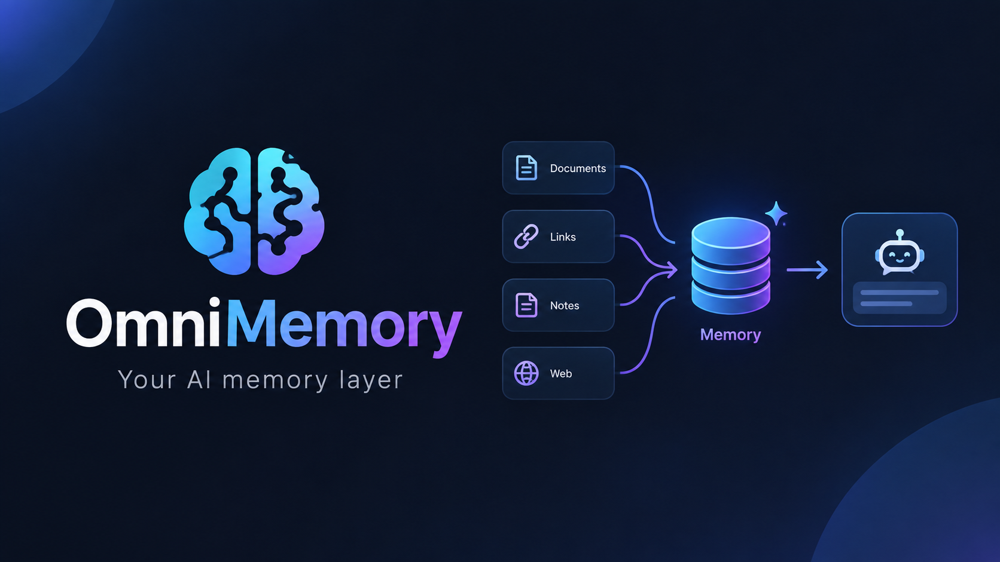
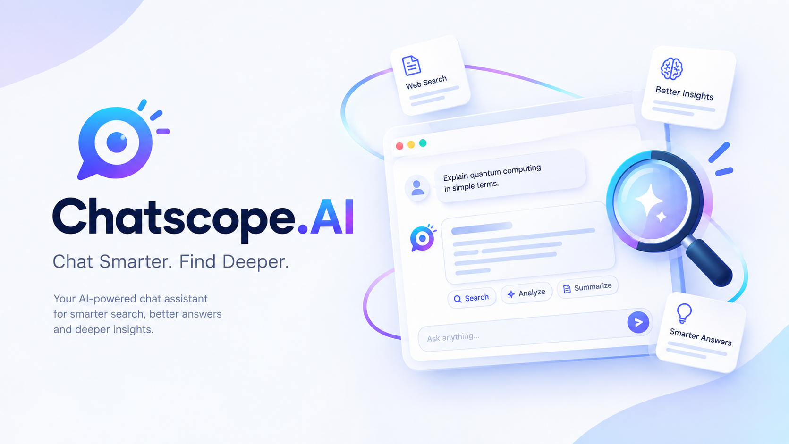
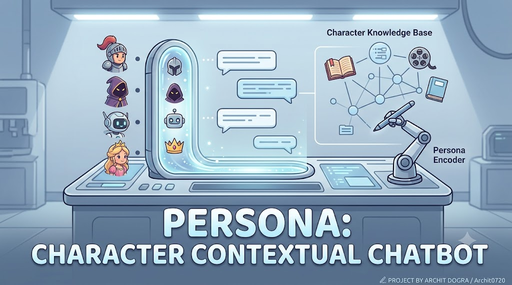
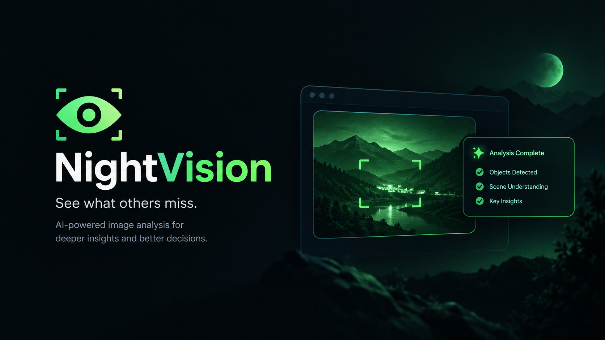

OmniMemory
AI-powered knowledge management — upload documents, generate summaries and topics, search semantically, and chat with a personal knowledge base.
Next.jsFastAPIChromaDBGroqLangChain
Personal AI products used to explore retrieval, memory, multimodal intelligence, analytics and agent-style interaction. Every project card is intentionally equal in visual weight.

AI-powered knowledge management — upload documents, generate summaries and topics, search semantically, and chat with a personal knowledge base.

Privacy-first WhatsApp chat analytics with activity insights, word clouds, local TF-IDF semantic search and an optional Groq assistant.

AI Character Chat Studio for creating fictional personalities with context-aware responses, character consistency, group chats and autonomous conversations.

Hybrid low-light enhancement and scene intelligence combining OpenCV enhancement, YOLOv8s object detection and multimodal reasoning.